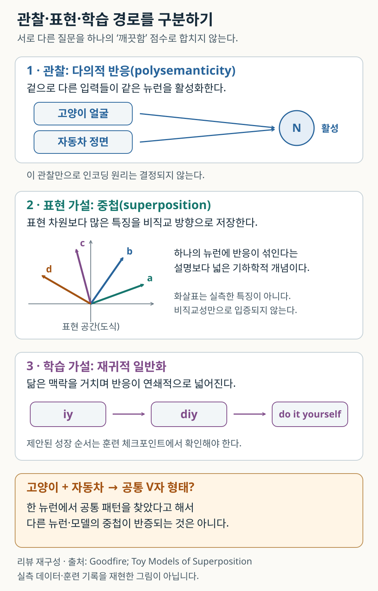
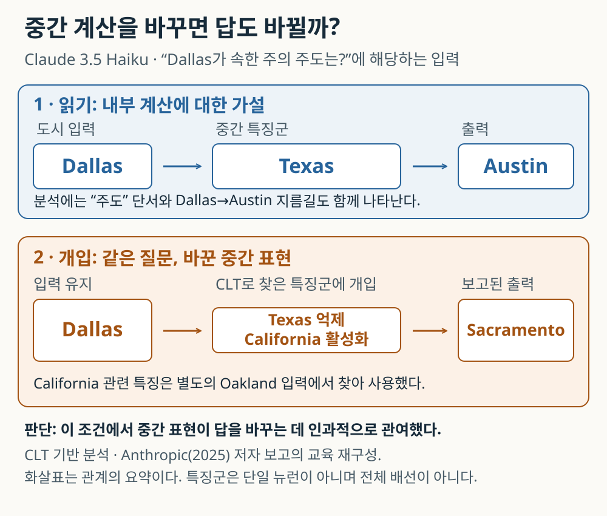
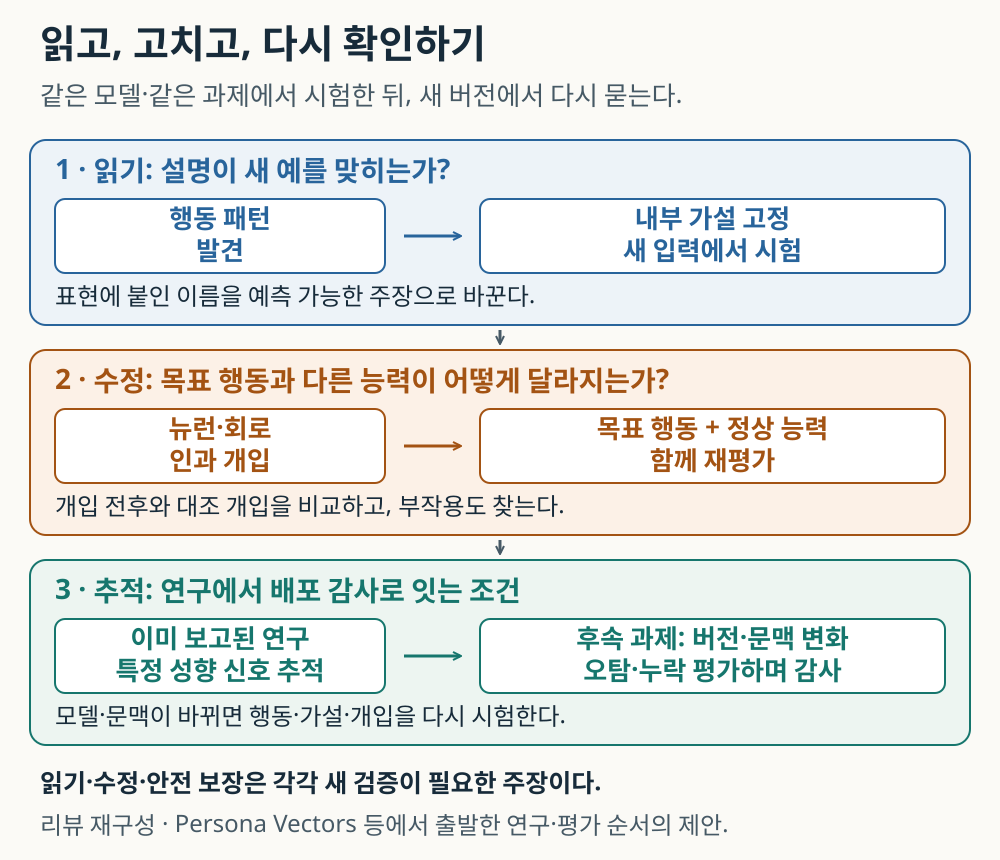

신경망을 이해한다는 것: 의미를 읽고 원인을 시험하는 과학
뉴런과 특징, 계산 회로를 따라가며 묻는다. AI의 내부를 읽는 기술은 모델을 고치고 신뢰하는 방식을 어디까지 바꿀 수 있을까.

내용 살펴보기
“댈러스가 속한 주의 주도는 어디인가?”
답은 오스틴이다. 댈러스는 텍사스주에 있고 텍사스의 주도는 오스틴이기 때문이다. AI가 이 질문에 답한 뒤 같은 설명까지 덧붙였다면, 우리는 모델도 그 두 단계를 거쳤다고 생각하기 쉽다. 그러나 정답과 유창한 설명만으로는 그 안에서 실제로 어떤 계산이 일어났는지 알 수 없다. 도시 이름과 답을 곧바로 연결했을 수도 있고, 여러 경로가 함께 답에 기여했을 수도 있다.
2025년 Anthropic 연구진은 Claude 3.5 Haiku의 내부에서 이 질문에 관여하는 특징들을 추적했다. 그리고 댈러스라는 입력은 그대로 둔 채 텍사스에 대응하는 특징군의 활성을 억제하고, 캘리포니아에 대응하는 특징군의 활성을 높였다. 답이 새크라멘토로 바뀌었다. 캘리포니아의 주도다. 연구자는 모델이 내놓은 설명을 듣는 데서 한 걸음 더 들어가, 자신이 찾아낸 중간 계산을 바꾸면 결과가 예상대로 따라오는지 시험한 것이다. [1, ‘Multi-step Reasoning’]
이 작은 실험은 AI를 이해한다는 말에 구체적인 뜻을 준다. 어떤 신호가 보였는지 기록하고, 그 신호에 관한 가설을 세우고, 신호를 건드린 뒤 달라진 답을 확인한다. 그 결과로 모델 전체가 해명되는 것은 아니다. 그래도 우리는 특정한 계산에 대해 이전보다 강한 설명을 갖게 된다.
최근 Goodfire의 닉 카마라타는 신경망의 원래 뉴런이 예상보다 훨씬 읽기 쉬울 수 있다고 주장했다. 그 주장은 해석 가능성 연구의 분석 단위를 둘러싼 논쟁을 다시 열었다. 이 글은 그 논쟁을 출발점으로, 뉴런의 의미를 발견하는 일이 어떻게 모델의 계산을 시험하고 행동을 고치는 일로 이어지는지 살펴본다. 나아가 그런 기술이 개발 과정과 안전 감사에 들어왔을 때 무엇을 새로 물어야 할지 짚는다. 핵심은 설명이 다음 실험을 가능하게 하느냐에 있다. [6, 7]
답변 뒤에 있는 수많은 숫자
언어모델에 문장을 넣으면, 모델은 문장을 토큰이라는 작은 조각으로 나누고 각 조각을 숫자들의 묶음으로 표현한다. 이 숫자들은 여러 층을 지나며 바뀐다. 어텐션(attention)은 어떤 위치의 정보를 가져올지에 관여하고, 다층 퍼셉트론(MLP)은 전달받은 표현을 변환한다. 이 과정이 누적되어 다음에 나올 토큰의 가능성을 바꾼다.
여기서 뉴런(neuron)은 생물학적 신경세포를 그대로 복제한 것이 아니라 신경망 안의 수치 계산 단위다. 활성값(activation)은 특정 입력을 처리할 때 그 단위에서 나오는 값이다. 학습된 가중치가 비교적 지속되는 연결의 설정이라면, 활성값은 지금 들어온 문장에 따라 달라지는 계산 상태다. 가중치를 바꾸는 학습과 추론 중 활성값을 바꾸는 실험은 구별해야 한다.
특징(feature)은 모델이 구별하거나 계산에 이용하는 패턴을 뜻한다. 곡선, 지명, 문법적 관계처럼 설명할 수 있지만, 반드시 우리가 평소 쓰는 명사 하나에 대응하지는 않는다. 특정 맥락에서만 성립하는 관계일 수도 있다. 특징이 원래 뉴런 하나와 맞아떨어지는 경우도 있고, 여러 뉴런이 함께 만드는 방향으로 표현되는 경우도 있다. [2, 4, 5]
따라서 모델 내부를 연다는 것은 곧바로 생각이 적힌 문서를 발견한다는 뜻이 아니다. 우리는 많은 숫자 사이에서 반복되는 관계를 찾아야 한다. 숫자에 붙인 설명이 맞는지도 따로 시험해야 한다. 이것이 기계적 해석 가능성(mechanistic interpretability) 연구가 다루는 문제다. 특정 출력이 어떤 내부 계산을 통해 만들어지는지, 관측과 실험을 이용해 밝혀내려는 시도다.
모델에게 이유를 직접 물어보면 되지 않을까? 그 답변도 자료가 되지만, 완전한 계산 기록으로 간주하기는 어렵다. 2025년 연구에서는 객관식 문제에 답을 유도하는 힌트를 주고, 그 힌트 때문에 답이 바뀐 경우 추론 문장이 영향을 언급하는지 조사했다. Claude 3.7 Sonnet와 DeepSeek R1은 힌트의 영향을 받으면서도 이를 설명에서 빠뜨리는 경우가 있었다. 이 결과가 모든 추론 문장이 무용하다는 뜻은 아니다. 모델의 자기설명도 실제 행동과 대조해 읽어야 한다는 뜻이다. [8]
고양이와 자동차 사이에 무엇이 있을까
이미지 신경망의 한 뉴런이 고양이 얼굴과 자동차 전면에 모두 반응한다고 하자. 두 대상의 이름만 보면 기묘하다. 왜 고양이와 자동차가 같은 계산 단위에 들어 있을까?
가능한 답 하나는 우리가 잘못된 공통점을 찾고 있다는 것이다. 그 뉴런이 동물이나 탈것을 구별하는 것이 아니라, 양쪽에 나타나는 특정한 경계 모양을 구별한다면 반응은 덜 이상해진다. 카마라타는 InceptionV1의 유명한 사례를 V형과 둥근 형태를 구별하는 계산으로 재해석한다. 이 설명은 저자가 시각화와 연결 관계 등을 조사해 내린 해석이며, 이번 리뷰가 같은 모델을 실행해 독립 재현한 결과는 아니다. [6, ‘Cars and Animals’]
이 사례는 이름 붙이기의 어려움을 보여준다. 사람에게 고양이와 자동차는 멀리 떨어진 범주다. 영상의 특정 모서리를 읽는 계산에는 이웃일 수 있다. 반대로 두 입력에 공통된 모양을 하나 발견했다고 해서 뉴런의 모든 기능을 알아낸 것도 아니다. 고양이가 없는 V형, 고양이지만 그 경계가 흐린 영상, 방향을 바꾼 경계를 넣어 보아야 한다. 설명이 맞으면 그 결과까지 예측해야 한다.
한 뉴런의 활성 예들이 여러 의미를 가진 것처럼 보이는 현상을 다의성(polysemanticity)이라고 한다. 여기서 중요한 말은 ‘보인다’다. 서로 다른 기능이 한 단위에 함께 표현된 것인지, 아직 발견하지 못한 관계가 있는지는 관찰만으로 결정되지 않는다. 이 구별을 놓치면 읽기 어려운 뉴런은 모두 무질서하다고 생각하거나, 그럴듯한 공통점이 보이는 뉴런은 모두 이해했다고 생각하기 쉽다.
작은 공간에 많은 특징을 담는 방법
다의성을 설명해 온 중요한 가설이 중첩(superposition)이다. 여기서 중첩은 표현 공간의 차원보다 많은 특징을 담는다는 뜻이며, 양자 상태의 중첩을 말하는 것은 아니다.
평면에는 서로 직교하는 두 방향을 잡을 수 있지만, 그 위에 그을 수 있는 방향은 훨씬 많다. 여러 특징을 서로 다른 방향에 대응시키는 일 자체는 가능하다. 어려운 것은 그 특징들이 함께 나타났을 때 각각을 구별하는 일이다. 방향이 겹치면 서로 간섭하기 때문이다.
그런데 각 특징이 아주 드물게 켜진다면 사정이 달라진다. 대부분이 꺼져 있을 때에는 겹쳐 저장해도 간섭이 적은 경우가 많다. 2022년 「Toy Models of Superposition」은 희소한 합성 입력과 작은 ReLU 신경망에서 이런 저장과 간섭의 관계를 연구했다. 비선형 계산을 이용하면 제한된 공간에 더 많은 특징을 담을 수 있지만, 모든 입력 조합을 손실 없이 구별하는 것은 아니다. 이 결과는 통제된 작은 모형에 관한 것이다. 현대 언어모델의 모든 다의성에 같은 원인을 부여하는 증명은 아니다. [4]
이 관점에서 중요한 계산 단위가 원래 뉴런과 어긋나 있을 수 있다. 그래서 연구자들은 새로운 분석 단위를 찾는 도구를 만들었다. 희소 오토인코더(sparse autoencoder, SAE)는 원래 활성 벡터를 더 많은 후보 특징 중 소수의 조합으로 근사한다. 많은 단어가 있는 사전에서 한 문장을 설명할 몇 단어를 고르는 식이다. 이 비유는 후보가 많고 한 번에 일부만 쓰인다는 관계를 설명할 뿐, 실제 특징이 단어처럼 분명한 뜻과 경계를 가진다는 뜻은 아니다.
2023년 Anthropic은 작은 Transformer의 512개 뉴런 층을 4,000개 이상의 특징으로 분해했다. 이는 원래 좌표에서는 알아보기 어려운 패턴을 다른 단위로 조사할 수 있음을 보여 주었다. 특징 수가 늘었다는 사실만으로 자연의 유일한 기본 단위를 모두 찾았다고 말할 수는 없다. SAE에는 학습 비용과 재구성 오차가 생기며, 추출된 특징도 검증할 가설이다. [5]
다음 그림은 세 가지 질문을 구별한다. 위에서는 다의적인 반응을 관찰한다. 가운데에서는 공간에 특징을 담는 기하를 묻는다. 아래에서는 관련된 입력으로 반응이 넓어지는 학습 경로를 묻는다. 카마라타는 이 마지막 과정을 재귀적 일반화(recursive generalization)라고 부른다. 그림의 iy → diy → do it yourself는 짧은 문자열에서 관련 약어와 그 약어의 뜻으로 반응이 확장된다는 저자의 사례를 축약했다. 최종 반응에서 관계를 찾는 일과 실제 학습 중 성장 순서를 확인하는 일도 구분해야 한다. [6]

중첩은 표현의 기하를, 재귀적 일반화는 반응의 형성 경로를 주로 묻는다. 두 설명은 모든 정의에서 서로 배타적이지 않다. Goodfire가 특히 문제 삼는 것은 무관한 개념을 임의로 함께 묶는다는 설명이다. 이 논점을 ‘차원보다 많은 특징이 존재할 수 있는가’라는 질문과 같은 것으로 취급하면 논쟁을 잘못 읽게 된다.
지도에서 경로를 찾고, 그 경로를 바꿔 본다
특징을 찾았다면 다음에는 그 특징들이 어떻게 함께 계산하는지 물어야 한다. 회로(circuit)는 여기서 특정 행동에 기여하는 계산 단위들과 그 연결을 뜻한다. 물리적인 전선이나 칩의 배선도를 가리키는 말이 아니다.
도입의 댈러스 사례로 돌아가 보자. 연구진은 교차층 트랜스코더(cross-layer transcoder, CLT)를 이용해 MLP의 계산을 더 읽기 쉬운 특징들로 근사했다. SAE가 활성 패턴을 나누어 보는 도구라면, 이 방법은 여러 층에 걸친 계산 관계를 추적할 수 있도록 대체모델을 만드는 방법이다. 그 대체모델에서 찾은 관계는 원래 모델에서 개입으로 시험한다. [1, 2]
관찰된 관계 가운데에는 댈러스 입력에서 텍사스 관련 특징으로, 다시 오스틴을 출력하는 쪽으로 이어지는 경로가 있었다. 연구진은 오클랜드에 관한 별도 질문에서 캘리포니아 관련 특징들을 찾았다. 그리고 원래 댈러스 질문에 대해 텍사스 특징군을 억제하고 캘리포니아 특징군을 활성화했다. 새크라멘토가 나온 것은 ‘중간의 주 정보가 답에 기여한다’는 가설과 맞는다. [1]
그림은 이 비교를 위아래로 보여 준다. 위 행의 기준 응답을 먼저 읽고, 아래 행에서 도시 입력은 유지한 채 무엇을 바꾸었는지 본다. 출력이 예측한 방향으로 달라졌다는 것이 관찰만 할 때보다 강한 근거다. 다만 원래 그래프에는 댈러스에서 오스틴으로 직접 기여하는 경로도 있다. 모델이 오직 두 단계로만 계산한다고 해석하면 안 된다.

이 지도에도 빈 곳은 있다. 대체모델은 원래 모델을 근사하므로 오차가 있고, 이 방법에서는 어텐션 패턴 등을 고정해 분석하기 때문에 왜 그 위치에 주의를 보냈는지 정하는 계산을 모두 설명하지 않는다. 그래프가 같은 답을 내는 것과 원래 계산을 충분히 보존하는지도 구별해야 한다. 저자들이 개입 검증과 한계를 함께 보고한 이유다. [2, ‘Mechanistic Faithfulness’, ‘Limitations’]
원래 뉴런으로도 회로를 읽을 수 있을까
그렇다면 처음부터 별도로 특징을 분해하는 모델을 학습하지 않고 원래 뉴런을 쓰면 어떨까? Arora 등의 2026년 연구는 이 질문을 정량적으로 다뤘다. 비교에 쓰는 ‘뉴런’이 계산의 어느 지점인지부터 중요했다. 연구진은 MLP가 압축된 출력을 내놓기 직전, 확장된 내부 활성의 각 좌표를 분석했다. 여러 신호를 이미 합쳐 버린 뒤의 좌표보다, 합치기 직전의 신호가 특정 계산을 더 잘 드러낼 수 있다는 것이다. [3]
연구진은 영어 주어·동사 일치 네 과제에서 정답 동사와 주어의 수를 바꾼 비교 조건의 동사에 대한 출력 점수 차이(로짓 차이, logit difference)를 사용했다. 예를 들어 단수와 복수에 맞는 동사를 구별하는 계산을 얼마나 유지하는지 본 것이다. Llama 3.1 8B 기본 모델에서 RelP라는 기여도 추정법으로 고른 약 200개 회로 노드를 남기고, 나머지를 대조 입력들의 평균 활성으로 바꾸면 원래 동사 선호의 점수 차이가 거의 유지됐다. 반대로 선택한 회로 노드들을 평균 활성으로 바꾸면 그 효과가 거의 사라졌다. 논문은 이 두 측면을 충실도와 완전성 지표로 평가했다. 노드 선택에는 과제별 300쌍, 평가에는 따로 둔 40쌍을 사용했다. [3, §3–5, Fig. 2]
여기서 노드는 특정 토큰 위치에 있는 뉴런의 활성이다. 같은 뉴런이라도 위치가 다르면 다른 노드로 센다. 따라서 80억 개 매개변수 모델의 모든 능력이 200개 뉴런에 들어 있다는 뜻이 아니다. 충실도도 이 과제의 출력 점수 차이를 얼마나 보존하는지에 관한 말이다. 다른 지식·계획·안전성으로 그대로 옮길 수 없다.
이 연구가 중요한 까닭은 ‘뉴런이 읽기 쉬워 보인다’는 인상에서 더 나아가, 어떤 좌표와 추적 방법이 주어진 계산을 더 적은 단위로 보존하는가를 비교했기 때문이다. 결과는 원래 뉴런을 진지한 분석 단위로 삼을 이유를 준다. 동시에 SAE의 모든 용도가 사라졌다는 결론을 주지는 않는다. 분석 단위, 탐색 방법, 평가 과제를 함께 비교해야 한다.
큰 모델의 지도를 사람이 일일이 읽는 일도 병목이다. 같은 논문의 별도 Llama 3.1 8B Instruct 다단계 추론 사례에서는, 답에 기여가 큰 노드 257개 가운데 의미 있는 뉴런 23개를 수작업 설명 그림에 골라 넣었다. 후속 연구 ADAG는 이런 그래프의 묶음을 자동으로 찾고 입력과 출력에 대한 역할을 설명하려 한다. 자동화는 연구의 규모를 넓힐 수 있지만, 설명이 활성과 얼마나 상관하는지에 관한 점수가 곧 전체 행동의 보존이나 안전성을 뜻하지는 않는다. [3, §6; 12]
‘이미 정돈된 신경망’이라는 주장을 읽는 법
카마라타의 에세이는 이런 배경에서 읽을 만하다. 그는 오래된 다의성 사례와 시각화 도구를 다시 살피며, 원래 뉴런과 연결 관계에서 더 많은 것을 직접 배울 수 있다고 주장한다. 신경망을 먼저 풀어헤쳐야만 연구할 수 있다는 전제를 재검토하자는 문제 제기다. 다만 원 글은 비공식 연구 에세이·작업 가설로 제시돼 있다. [6]
화제가 된 Qwen3-32B의 약 90%는 뉴런의 양·음 활성 방향에 주된 역할 하나를 부여한 예비 판정이다. 약한 활성과 ‘한 역할’의 경계를 어떻게 정하느냐에 따라 달라진다. 전체 모델의 계산이나 안전성을 90% 이해했다는 비율이 아니다.
원 글이 관찰에만 머문 것도 아니다. 공개 갤러리에서 무작위로 고른 200개 뉴런 중 양의 활성 설명이 있는 183개를 대상으로, 설명만 본 에이전트가 새 예시와 비슷하지만 조건이 다른 예시를 각각 다섯 개씩 만들었다. 각 뉴런의 코퍼스 최대 활성의 30% 이상을 강한 반응으로 정했을 때, 강하게 반응한 생성 예시 비율은 각각 76%와 11%였다. 이는 설명이 새로운 입력을 구별할 수 있음을 시험한 저자 보고 결과다. 90% 판정의 정확도나 전체 기능 복원율과는 다른 수치다. [6, ‘Explanations That Could Lose’]
Leo Gao의 반론은 설명의 기준을 더 밀어붙인다. 활성 예시의 공통점을 찾아도, 설명에 맞는 새 입력이 언제 얼마나 활성화할지 모를 수 있다는 것이다. 그는 설명으로 예측한 활성값을 실제 값 대신 넣고 모델의 출력 분포가 얼마나 유지되는지 보자고 제안한다. 큰 반응에 어울리는 이름을 붙이는 일에서, 계산에 필요한 수치를 예측하는 일로 넘어가자는 요구다. [7]
약한 반응을 다루는 방식도 중요해진다. 활성값이 작다고 출력에 미치는 영향까지 작다는 보장은 없다. 뒤따르는 가중치가 크거나 작은 기여가 여러 곳에서 합쳐질 수 있기 때문이다. 반대로 모든 작은 반응을 중요하다고 단정할 수도 없다. 제거하거나 대체한 뒤 무엇이 달라지는지 재야 한다. Gao의 약한 활성 관련 관측 역시 그 반론 글에서 완결된 재현 데이터로 제시된 것은 아니다.
따라서 이 논쟁의 생산적인 결론은 어느 편의 구호를 택하는 데 있지 않다. 원래 뉴런, SAE 특징, 회로의 연결을 같은 과제와 예산에서 시험하고 각 설명이 실패하는 조건을 밝힐 수 있다. ‘얼마나 많은 단위에 이름을 붙였나’와 ‘그 설명으로 무엇을 예측하고 바꿀 수 있나’를 함께 보고하는 것이다.
설명을 얻으면 모델을 고칠 수 있을까
이 질문에서 해석 연구는 개발 방식과 만난다. 어떤 특징이 답변에 관여한다면 그 특징을 바꾸어 모델의 행동을 조절할 수 있을까?
2024년 Anthropic 연구진은 Claude 3 Sonnet에서 SAE로 금문교 관련 특징을 찾았다. 그리고 추론 중 그 특징의 활성값을 관측 최대값의 10배로 고정했다. 모델은 무관한 질문에도 금문교를 끌어들이고 자신을 다리라고 말하기도 했다. 여기서 바뀐 것은 가중치가 아니라 활성 상태다. ‘금문교’라는 해석이 실제 출력의 변화를 예측하는 데 연결된 사례다. [9, ‘Influence on Behavior’, ‘Feature Steering’]
그러나 강하게 증폭해 반응을 일으키는 것과, 원하는 행동만 정밀하게 고치는 것은 다른 실험이다. 금문교에 집착하는 답변은 제어 가능성을 보여 주면서도 개입의 거친 성격을 드러낸다. 수리가 목적이라면 문제 행동이 줄었는지와 정상 능력이 남았는지를 함께 보아야 한다.
이 연결을 더 직접적으로 다룬 것이 페르소나 벡터(persona vectors) 연구다. 연구진은 Qwen2.5-7B-Instruct와 Llama-3.1-8B-Instruct에서 특정 응답 성향을 보일 때와 그렇지 않을 때의 평균 활성 차이를 구했다. 이렇게 얻은 방향을 따라 활성 상태를 바꾸며 아첨이나 허위정보 생성 등의 성향 점수가 어떻게 변하는지 조사했다. 이 벡터는 뉴런 하나나 SAE 특징 하나와 같지 않으며, 연구자가 정의한 응답 성향과 연관된 활성 방향이다. [10]
결과는 수리의 어려움도 보여 준다. 미세조정 뒤 역방향으로 개입해 문제 성향을 줄이면 일반 능력 평가인 MMLU 점수가 낮아지는 경우가 있었다. 학습 중 개입하는 예방적 방식은 연구 조건에서 능력을 더 잘 보존했다. ‘어디를 건드릴 수 있는가’를 발견한 뒤에도, 언제 얼마나 개입해야 목표와 다른 능력을 함께 지킬 수 있는가라는 문제가 남는다. [10, §3, 5]
이것은 AI를 만드는 절차에 의미 있는 변화를 제안한다. 지금은 잘못된 답변을 모아 추가 학습을 시키는 경우가 많다. 앞으로는 출력의 변화와 내부 신호의 변화를 함께 관찰해 어느 수정이 무엇을 바꿨는지 비교할 수 있을 것이다. 이는 검토한 연구들을 연결한 전망이다. 현재 기술로 모든 오류를 찾아 정밀 수리할 수 있다는 주장은 아니다.
한 번의 설명이 업데이트를 견딜 수 있을까
모델은 새 자료를 학습하고 사용 환경도 바뀐다. 오늘 찾은 신호가 내일도 같은 뜻을 가진다고 가정할 수는 없다. 페르소나 벡터 연구는 대화 중 활성과 응답 성향의 관계, 학습 데이터가 만들 성향 변화도 조사했다. 다만 답변 직전 신호와 성향 점수의 높은 상관은 주로 서로 다른 지시문군의 차이에서 나왔고, 같은 군 안에서는 약해졌다. 자연스러운 장기 사용 중 미묘한 변화를 안정적으로 탐지한다고 확대해 읽기는 어렵다. [10, §3.3]
같은 논문에는 더 날카로운 실패 사례가 있다. 연구진은 학습 중 특정 성향 방향의 활성 변화에 벌점을 주는 규제 방법도 시험했다. 그 방향으로의 변화는 어느 정도 줄었지만 문제 성향은 여전히 나타났다. 저자들은 모델이 다른 활성 방향으로 그 성향을 표현했을 가능성을 제안한다. 관측된 실패와 그 원인에 대한 추정은 구별해야 한다. 이 사례는 내부 지표를 개선하는 일과 행동을 개선하는 일을 따로 검사해야 하는 이유를 보여 준다. [10, §5.2, Appendix J.5]
그럼에도 후속 질문은 구체적이다. 모델이 업데이트되었을 때 같은 내부 신호를 다시 측정하면, 바뀐 행동을 더 일찍 알아챌 수 있을까? 특정 언어에서 찾은 신호가 다른 언어에서도 유효할까? 정상 응답에서 경보가 울리는 비율과 위험한 응답을 놓치는 비율은 어떻게 달라질까? 이것들은 앞으로 수행할 검증의 질문이며 이미 완성된 안전 장치의 기능 목록이 아니다.
아래 그림은 관측, 개입, 재점검을 연결한다. 왼쪽에서 읽을 수 있는 신호를 찾았다고 가운데의 수리가 자동으로 성공하지 않으며, 수리가 성공해도 오른쪽의 새로운 버전·문맥에서 다시 시험해야 한다. 특정 성향의 추적은 이미 연구됐지만, 다양한 배포 환경에서 검증된 지속 감사 절차로 발전시키는 일은 남아 있다.

이 관점에서 모델을 이해한다는 판정에는 버전과 조건이 붙게 된다. ‘이 모델은 이해했다’보다 ‘이 버전의 이 행동은 이 입력 범위에서 이런 개입까지 설명했다’가 과학적으로 더 유용하다. 설명이 어디서 실패했는지 남겨야 다음 수정과 시험도 가능해진다.
내부를 볼 수 있으면 감사도 더 잘될까
여기에는 뜻밖의 제동도 있다. 2026년 AuditBench는 특정한 숨은 행동을 심어 놓고 직접 물어도 이를 털어놓지 않도록 훈련한 모델들을 이용해, 감사 도구가 실제 문제를 얼마나 찾아내는지 비교했다. 주된 실험 묶음은 Llama 3.3-70B-Instruct에 기반한 56개 모델이며, 심은 행동은 14개 범주에 걸친다. [11]
감사자는 조사를 마친 뒤 숨은 행동에 관한 가설 10개를 제출했다. 그중 심은 행동에 해당하는 가설이 있는지를 별도의 언어모델 판정기로 평가했다. 최신 v4에서 기본적인 대화 도구를 쓴 감사자의 평균 성공률은 35.5%였고, 보조 모델로 텍스트 완성 요청을 구성해 탐색한 설정은 58.0%였다. 목표 모델·도구 설정마다 16회씩 반복한 결과다. 이 수치는 한정된 시험장에서 숨은 행동을 맞힌 비율이며 서비스의 안전 점수가 아니다. [11, §3–4]
이 벤치마크에서 전반적으로 가장 효과적인 것은 이처럼 보조 모델로 탐색 요청을 구성하는 방식이었다. 내부를 보는 해석 도구도 도움이 됐지만 주로 쉬운 대상에서였다. 또 도구가 따로는 유효한 증거를 내놓아도, 조사 에이전트가 그 증거를 잘 쓰지 못하면 최종 감사 성과가 좋아지지 않는 간극이 관찰됐다. [11]
이는 내부 해석의 가치를 부정하는 결과가 아니다. 좋은 관측 도구와 좋은 조사는 함께 평가해야 한다는 결과다. 내부 신호에서 단서를 얻었어도 틀린 가설을 세우거나 반례를 찾지 않으면 문제를 놓칠 수 있다. 출력만 보는 시험도 정교하게 구성하면 강력할 수 있다. 그러므로 답변 기록, 추론 문장, 내부 활성, 인과 개입은 서로의 빈틈을 확인하는 자료로 사용하는 편이 타당하다.
물론 AuditBench도 알려진 방식으로 심은 행동의 시험장이다. 그 성과가 실제 서비스에 존재할 수 있는 모든 미지의 문제를 발견할 확률은 아니다. 여기서 얻을 교훈은 ‘어떤 도구가 더 깊숙이 들어가는가’만으로 우열을 정하지 말고, 그 도구를 쓰는 전체 절차가 실제 발견과 수정에 얼마나 기여했는지 재자는 것이다.
지금까지의 근거를 이 관점에서 정리하면 다음과 같다. 아래 마지막 열은 리뷰가 제안하는 후속 시험이며 수행 결과가 아니다.
| 연구에서 확인한 범위 | 아직 넘어가지 못한 경계 | 판단을 더 강하게 만들 시험 |
|---|---|---|
| 도시–주–주도 사례의 특정 특징군 개입이 예상한 답 변화를 만들었다. | 모든 입력의 전체 회로나 유일한 계산 경로 | 새 도시·문장과 다른 경로의 대조 개입에서 예측 재시험 |
| 제한된 문법 과제에서 작은 원래 뉴런 회로가 출력 점수 차이를 잘 보존했다. | 모델 전체 능력의 이해율 | 과제·모델·활성 범위를 넓혀 같은 예산의 SAE와 비교 |
| 특징·활성 방향의 개입과 특정 응답 성향의 추적이 가능했다. | 정밀 수리와 범용 안전 감시 | 목표 행동·정상 능력·오경보·누락을 업데이트 전후 함께 측정 |
| 감사 도구를 조합한 절차의 발견 성과를 비교할 수 있었다. | 모든 미지의 위험에 대한 탐지 보증 | 새로 심은 행동과 실제 실패 사례에서 독립적인 블라인드 감사 |
누가 설명을 만들고, 누가 그 설명을 시험할까
해석 기술이 개발과 감사에 들어오면 내부 접근권도 과학적 문제의 일부가 된다. 금문교와 Haiku의 회로 실험은 개발사가 모델 내부에 접근해 수행했다. 원래 뉴런 회로 연구와 페르소나 벡터 연구는 공개 가중치 모델과 코드를 사용한다. 결과를 읽을 수 있는 것과 같은 개입을 직접 반복할 수 있는 것은 다르다.
이 차이에서 이어지는 다음 논의는 리뷰의 전망이다. 외부 연구자가 답변만 받는 인터페이스를 이용한다면 원래 활성에 같은 방식으로 개입할 수 없다. 그렇다고 가중치만 공개하면 검증이 완성되는 것도 아니다. 어떤 입력으로 설명을 만들었는지, 어떤 버전의 코드와 모델을 썼는지, 실패 사례를 어떻게 처리했는지와 실험 비용도 알아야 한다. 앞으로 ‘감사를 받았다’는 표현에는 누가 어디까지 접근하고 무엇을 반복했는지에 관한 정보가 더 필요해질 것이다.
수정의 목표도 기술이 자동으로 정해 주지는 않는다. 페르소나 벡터는 연구자가 ‘아첨’ 같은 성향과 그 설명을 먼저 정한 뒤 구한다. 예의를 지키는 답변과 사용자의 잘못된 믿음에 동의하는 답변의 경계를 누가 어떻게 정했는지 물어야 한다. 성향에 붙인 이름이 사람의 마음속 실체를 발견한 것처럼 읽혀서도 안 된다. 이 연구들이 측정한 것은 정해진 질문과 판정 기준에서 나타난 응답의 경향이다.
같은 개입 기술로 솔직함을 높이려 할 수도, 특정 입장에 대한 동의를 늘리려 할 수도 있다. 이 가능성은 특정 연구가 그런 오용을 입증했다는 말이 아니다. 모델 행동을 바꿀 수 있다는 사실에서 생기는 후속 질문이다. 무엇을 바꾸었는지, 누구에게 유리한 기준인지, 다른 능력과 사용자에게 어떤 비용을 주는지를 공개하는 일이 기술의 발전과 함께 중요해진다.
우리는 얼마나 이해해야 앞으로 갈 수 있을까
신경망 안의 모든 단위에 완벽한 설명을 붙일 때까지 기다려야만 유용한 수정을 할 수 있는 것은 아니다. 댈러스 실험은 제한된 계산에 관한 설명으로도 예측 가능한 개입을 할 수 있음을 보여 준다. 원래 뉴런 회로 연구는 그런 설명을 얻는 비용과 단위를 비교하게 한다. 특징 조절과 페르소나 벡터는 설명을 수리와 추적의 문제로 확장한다. AuditBench는 그 도구를 실제로 쓰는 전체 조사 과정까지 시험하라고 요구한다.
이 연장에서 기대할 수 있는 변화는 AI 개발에 실험과 기록의 자리가 더 커지는 것이다. 어떤 행동이 왜 바뀌었는지 가설을 세우고, 내부 신호와 외부 응답을 함께 비교하고, 수정의 이익과 부작용을 측정한다. 다음 버전에서는 설명을 다시 시험한다. 이는 검토한 결과로부터 이 글이 제시하는 방향이며 이미 확립된 산업 표준이나 안전 보증은 아니다.
도입의 질문으로 돌아가면, 우리가 얻고 싶은 것은 AI가 스스로 들려주는 그럴듯한 이유 이상의 것이다. 새로운 질문에서 계산을 예측하고, 개입한 결과를 확인하고, 틀렸을 때 설명을 고칠 수 있는 지식이다. 그 지식이 쌓일수록 모델을 고치고 사용할 근거도 구체화될 것이다. 신뢰는 내부가 보인다는 선언보다, 무엇을 설명했고 어디서 실패했는지 함께 남기는 실험의 축적 위에 놓이게 된다.
참고문헌과 자료의 성격
- Jack Lindsey et al., On the Biology of a Large Language Model, 2025-03-27. Claude 3.5 Haiku의 특징·회로와 개입 사례. 특히 Method Overview·Multi-step Reasoning·Limitations.
- Emmanuel Ameisen et al., Circuit Tracing: Revealing Computational Graphs in Language Models, 2025-03-27. 대체모델·개입 검증·방법의 한계.
- Aryaman Arora, Zhengxuan Wu, Jacob Steinhardt and Sarah Schwettmann, Language Model Circuits Are Sparse in the Neuron Basis, v2, 2026-06-11. arXiv에 ICML Spotlight·camera-ready로 표시. 공식 코드 고정본. 원 논문 §3–6과 코드의 입력 위치·설정을 대조했으며 실행 재현은 하지 않았다.
- Nelson Elhage et al., Toy Models of Superposition, 2022. 합성 희소 입력의 작은 신경망 연구.
- Trenton Bricken et al., Towards Monosemanticity: Decomposing Language Models With Dictionary Learning, 2023-10-05.
- Nick Cammarata, Neural Networks Are Already Clean, Goodfire, 2026-10-15. 비공식 연구 에세이·작업 가설. 2026-10-23 열람본 기준으로 최초 공개 때 모든 부록이 동일했는지는 확인하지 않았다.
- Leo Gao, Neural networks are not already clean, 2026-10-17. 연구자의 공개 반론이며 완결된 독립 재현 논문은 아니다.
- Yanda Chen et al., Reasoning Models Don’t Always Say What They Think, 2025-05-08 제출. 공식 소개는 2025-04-03 공개.
- Adly Templeton et al., Scaling Monosemanticity: Extracting Interpretable Features from Claude 3 Sonnet, 2024-05-21. 금문교 특징의 개입은 추론 중 활성값 고정이며 가중치 수정과 구별한다.
- Runjin Chen, Andy Arditi, Henry Sleight, Owain Evans and Jack Lindsey, Persona Vectors: Monitoring and Controlling Character Traits in Language Models, v3, 2025-09-05. 공식 코드. 성향의 정의·판정기·모델·문맥의 조건을 유지해 읽었다.
- Abhay Sheshadri et al., AuditBench: Evaluating Alignment Auditing Techniques on Models with Hidden Behaviors, v4, 2026-10-01. 데이터 구성 버그를 수정하고 실험을 재실행한 판본을 사용했으며, 앞선 블로그·판본의 수치를 혼용하지 않았다.
- ADAG: Automatically Describing Attribution Graphs, 2026-04-08. 자동 설명의 평가는 전체 행동·안전 보증과 구별한다.
- 취재 출발점: Will Douglas Heaven, 「우리가 잘못 보고 있었다」…AI 신경망에 대한 통념 뒤흔든 주장, MIT 테크놀로지 리뷰 한국판, 2026-10-23. 공개 도입부·자동 요약을 확인했고 구독 인터뷰 본문 전체는 접근하지 않았다. 본문의 연구 주장은 위 원자료에서 별도로 확인했다.